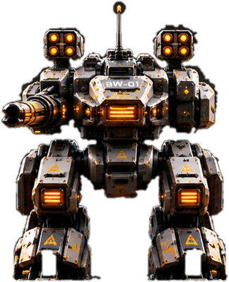
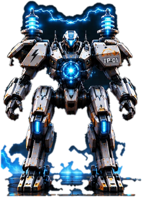
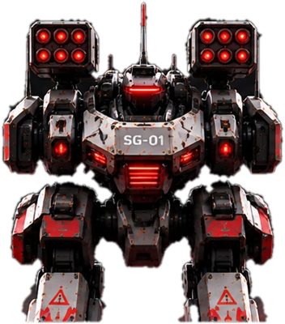
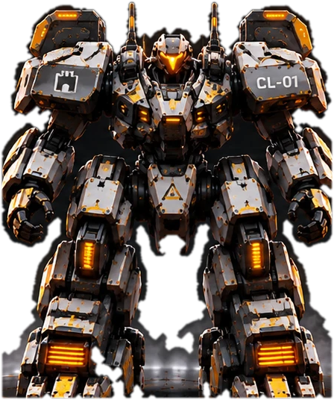

Developer: Fatih TAŞ (Türkiye)
Genre: top-down mech arena shooter
Platforms: Android, Windows, browser (Steam and iOS planned)
Price: free to play
Languages: 9Geliştirici: Fatih TAŞ (Türkiye)
Tür: yukarıdan bakışlı robot arena nişancı
Platformlar: Android, Windows, tarayıcı (Steam ve iOS planlanıyor)
Fiyat: ücretsiz
Dil: 9
Nexablast is a fast top-down mech shooter. Build a war mech from eight frames and dozens of weapons, then fight real pilots in short arena matches, a fair ranked ladder, clan events and an 8-chapter story.Nexablast hızlı, yukarıdan bakışlı bir robot nişancı oyunudur. Sekiz robot ve onlarca silahla savaş robotunu kur; kısa arena maçlarında, adil dereceli ligde, klan etkinliklerinde ve 8 bölümlük hikâyede gerçek pilotlarla savaş.







